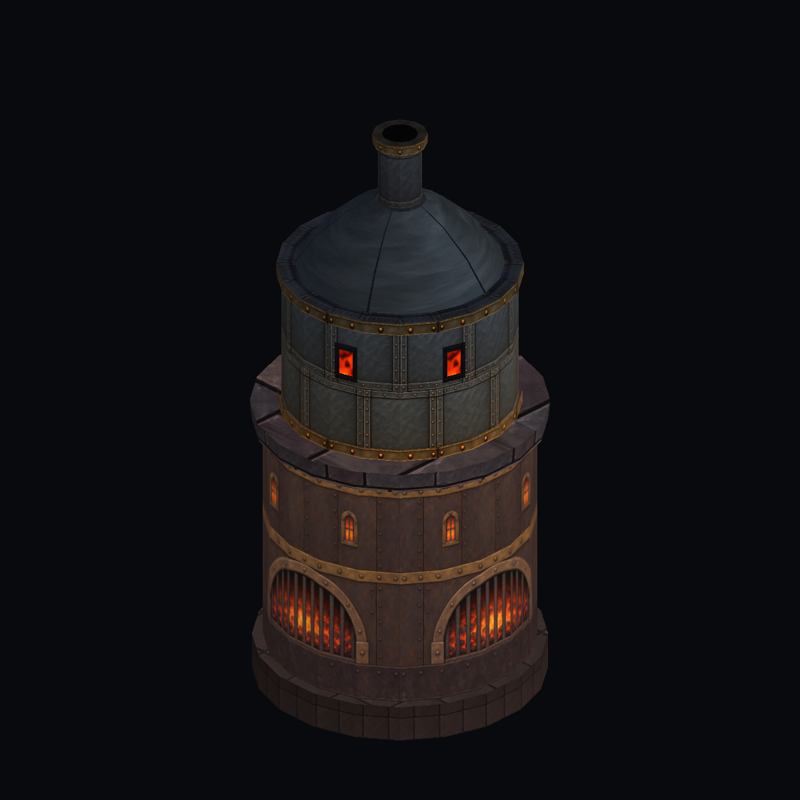
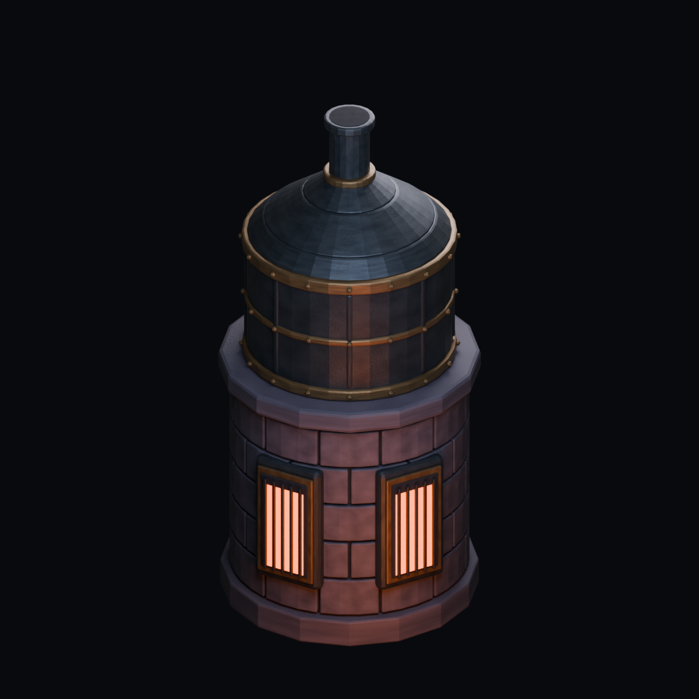

CRYPTFORGE · 09 EKİM 2026 · ÜCRETSİZ ARAÇ DENEMESİ
Tek fırın, iki üretim yöntemi
Mevcut oyun geometrisi ve Blender’da hazırlanan yeni örnek, Unity’de aynı kamera ölçeğiyle görüntülendi. Bu çalışma henüz haritaya veya telefona eklenmedi.

Mevcut oyun fırını
Kemerli açıklıklar ve daha zengin mimari ayrıntı.

Blender denemesi
Daha belirgin metal hacmi, kenar ışığı ve yüzey gölgesi.
Karar: henüz değiştirmiyoruz.
Yeni örnek fazla temiz ve tekrarlı; ateş açıklıkları da fazla düz. Mevcut fırının mimari karakterini koruyup yeni ışık ve malzeme yöntemini onun üzerinde geliştirmek daha anlamlı.
Bu deneme neyi kanıtlıyor?
Blender’dan düzenlenebilir model ve önceden render edilmiş görünüm üretebiliyoruz; görünüm Unity’de gösterilebiliyor. Haritadaki karakter örtüşmesi, kesilme sistemi, zeminle birleşme ve mobil maliyet henüz doğrulanmadı. İki modelin ışıkları da farklı; bu yalnızca malzeme değişikliği karşılaştırması değil.
Ek abonelik / ücretli API: kullanılmadı. Mevcut telefon sürümü korunuyor. Çalışma modeli 9.512 vertex ve 18.432 üçgen; mobil kullanım için optimize edilmiş sayılmıyor.
Kaynaklar ve doğrulama
Düzenlenebilir Blender sahnesi · FBX model · Şeffaf render · Teknik notlar
Gerçek Unity grafik yakalama testi: 1/1 başarılı. Proje bütünlük kontrolü başarılı. Telefon testi veya tam harita kalite onayı değildir. FBX, Blender’ın malzeme görünümünü hazır Unity malzemesi olarak içermez.